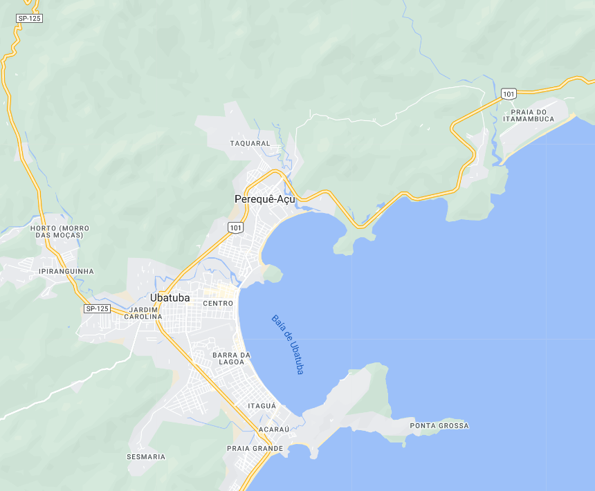

Ubatuba - Geodex

Município de Ubatuba
-
População: 92.819 pessoas
-
Área: 708,105km²
-
Fundação: 28 de Outubro de 1637
-
Distância da Capital: 220km
A história de Ubatuba remonta aos tempos em que os índios Tupinambás habitavam a região e viviam em paz com os índios do planalto. No entanto, com a chegada dos portugueses e franceses, as relações mudaram, e os portugueses tentaram escravizar os índios. Em 1563, os jesuítas Manoel da Nóbrega e José de Anchieta promoveram a Paz de Iperoig, assinando um tratado de paz com os índios liderados por Cunhambebe. Com a paz estabelecida, a região começou a ser colonizada e foi elevada à categoria de Vila em 1637, com o nome de Vila Nova da Exaltação à Santa Cruz do Salvador de Ubatuba. Ao longo dos anos, Ubatuba passou por períodos de prosperidade e decadência, mas foi com a abertura dos portos em 1808 e o desenvolvimento do comércio, especialmente com a exportação de café, que a cidade ganhou impulso econômico. A partir de então, Ubatuba se tornou um importante porto exportador e alcançou o status de cidade em 1855. No século XX, com a melhoria das estradas e a abertura da Rodovia Rio-Santos em 1975, o turismo se tornou a principal fonte de renda do município, impulsionando seu desenvolvimento.